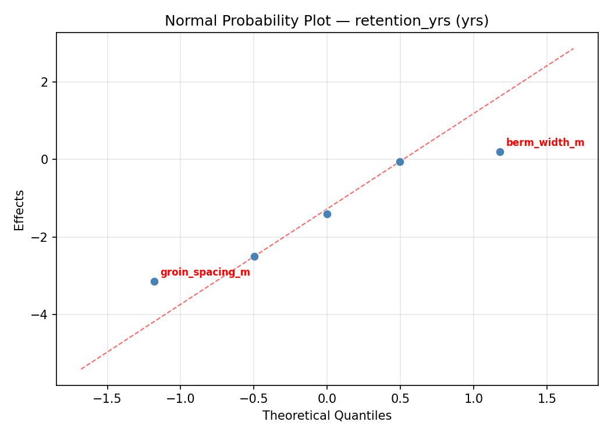
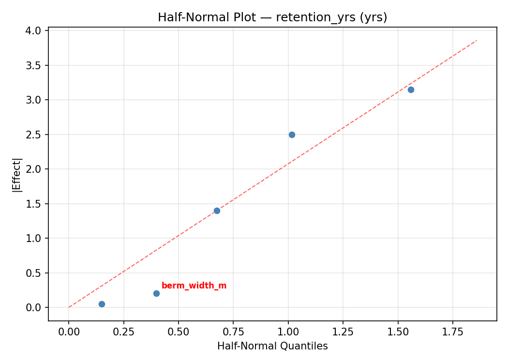
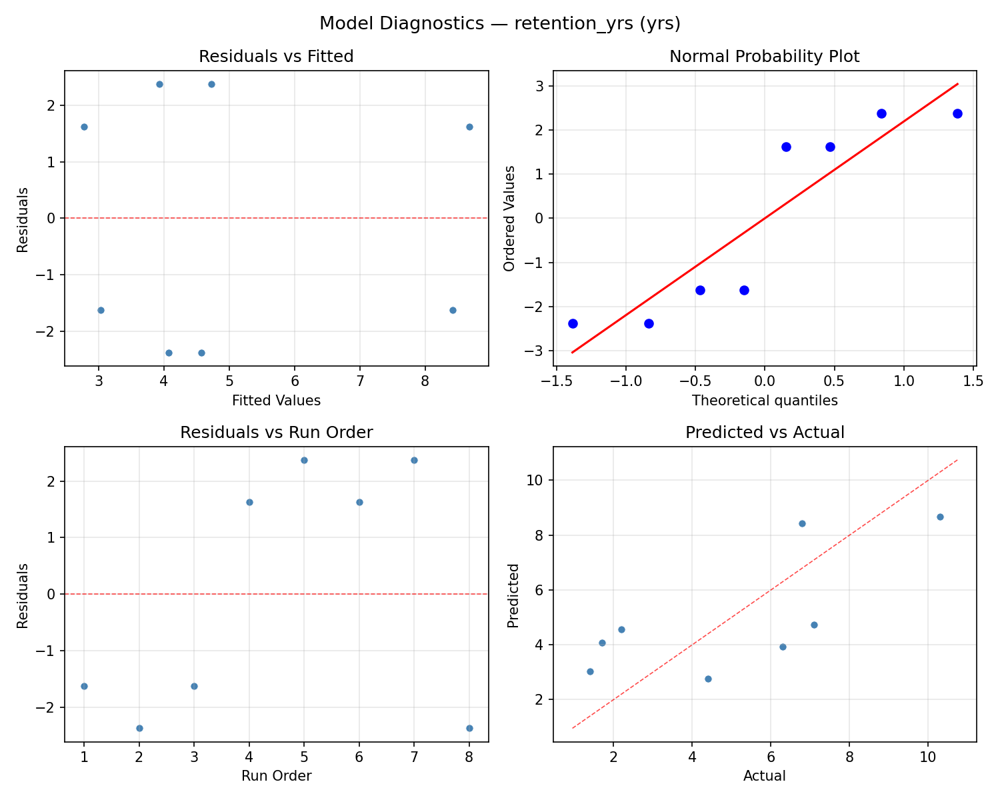
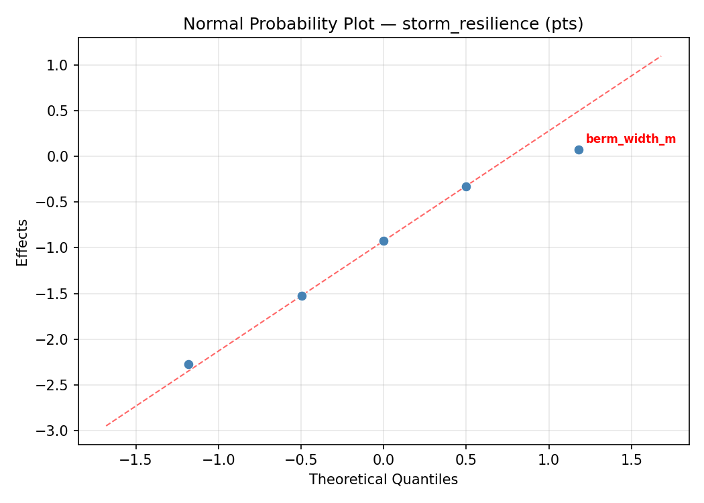
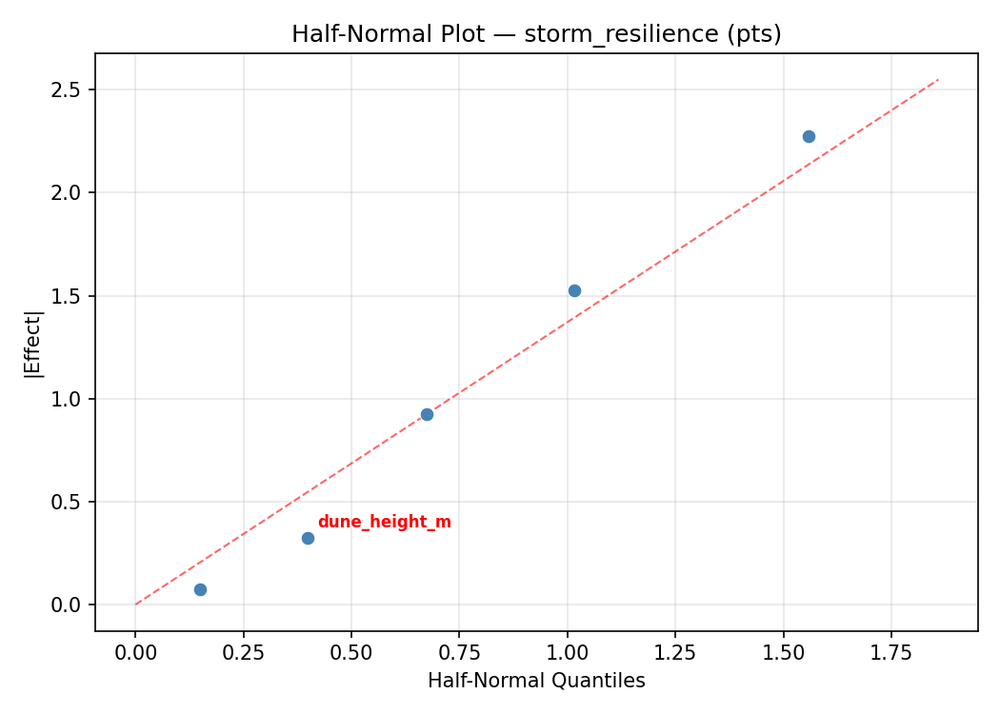
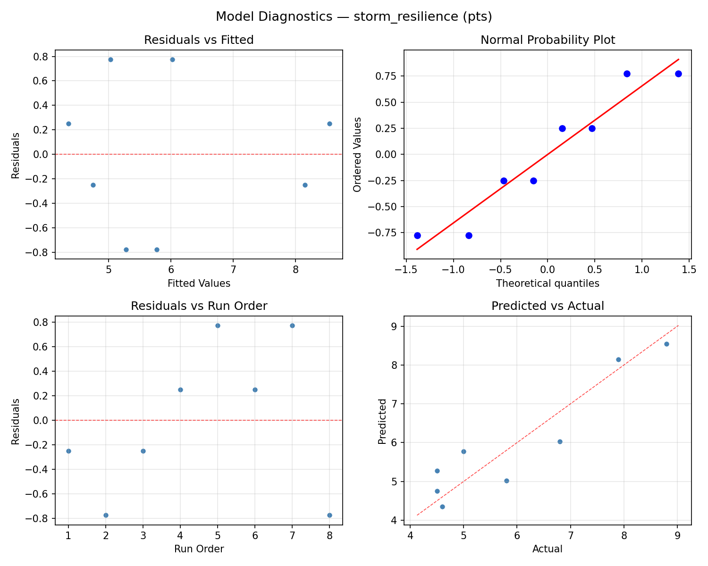

Summary
This experiment investigates beach nourishment longevity. Plackett-Burman screening of sand grain size, berm width, dune height, groin spacing, and nourishment volume for retention and storm resilience.
The design varies 5 factors: grain mm (mm), ranging from 0.3 to 1.0, berm width m (m), ranging from 20 to 60, dune height m (m), ranging from 2 to 5, groin spacing m (m), ranging from 100 to 400, and volume m3 m (m3/m), ranging from 30 to 100. The goal is to optimize 2 responses: retention yrs (yrs) (maximize) and storm resilience (pts) (maximize). Fixed conditions held constant across all runs include wave climate = moderate, longshore drift = southward.
A Plackett-Burman screening design was used to efficiently test 5 factors in only 8 runs. This design assumes interactions are negligible and focuses on identifying the most influential main effects.
Key Findings
For retention yrs, the most influential factors were groin spacing m (68.4%), grain mm (22.4%), volume m3 m (5.9%). The best observed value was 10.3 (at grain mm = 1.0, berm width m = 20, dune height m = 2).
For storm resilience, the most influential factors were groin spacing m (57.2%), berm width m (24.1%), dune height m (12.3%). The best observed value was 8.8 (at grain mm = 1.0, berm width m = 20, dune height m = 2).
Recommended Next Steps
- Follow up with a response surface design (CCD or Box-Behnken) on the top 3–4 factors to model curvature and find the true optimum.
- Consider whether any fixed factors should be varied in a future study.
- The screening results can guide factor reduction — drop factors contributing less than 5% and re-run with a smaller, more focused design.
Experimental Setup
Factors
| Factor | Low | High | Unit |
|---|
grain_mm | 0.3 | 1.0 | mm |
berm_width_m | 20 | 60 | m |
dune_height_m | 2 | 5 | m |
groin_spacing_m | 100 | 400 | m |
volume_m3_m | 30 | 100 | m3/m |
Fixed: wave_climate = moderate, longshore_drift = southward
Responses
| Response | Direction | Unit |
|---|
retention_yrs | ↑ maximize | yrs |
storm_resilience | ↑ maximize | pts |
Configuration
{
"metadata": {
"name": "Beach Nourishment Longevity",
"description": "Plackett-Burman screening of sand grain size, berm width, dune height, groin spacing, and nourishment volume for retention and storm resilience"
},
"factors": [
{
"name": "grain_mm",
"levels": [
"0.3",
"1.0"
],
"type": "continuous",
"unit": "mm"
},
{
"name": "berm_width_m",
"levels": [
"20",
"60"
],
"type": "continuous",
"unit": "m"
},
{
"name": "dune_height_m",
"levels": [
"2",
"5"
],
"type": "continuous",
"unit": "m"
},
{
"name": "groin_spacing_m",
"levels": [
"100",
"400"
],
"type": "continuous",
"unit": "m"
},
{
"name": "volume_m3_m",
"levels": [
"30",
"100"
],
"type": "continuous",
"unit": "m3/m"
}
],
"fixed_factors": {
"wave_climate": "moderate",
"longshore_drift": "southward"
},
"responses": [
{
"name": "retention_yrs",
"optimize": "maximize",
"unit": "yrs"
},
{
"name": "storm_resilience",
"optimize": "maximize",
"unit": "pts"
}
],
"settings": {
"operation": "plackett_burman",
"test_script": "use_cases/258_beach_nourishment/sim.sh"
}
}
Experimental Matrix
The Plackett-Burman Design produces 8 runs. Each row is one experiment with specific factor settings.
| Run | grain_mm | berm_width_m | dune_height_m | groin_spacing_m | volume_m3_m |
|---|
| 1 | 1.0 | 60 | 5 | 100 | 30 |
| 2 | 0.3 | 20 | 5 | 400 | 30 |
| 3 | 0.3 | 60 | 2 | 400 | 30 |
| 4 | 1.0 | 60 | 5 | 400 | 100 |
| 5 | 0.3 | 60 | 2 | 100 | 100 |
| 6 | 1.0 | 20 | 2 | 400 | 100 |
| 7 | 0.3 | 20 | 5 | 100 | 100 |
| 8 | 1.0 | 20 | 2 | 100 | 30 |
Step-by-Step Workflow
1
Preview the design
$ python doe.py info --config use_cases/258_beach_nourishment/config.json
2
Generate the runner script
$ python doe.py generate --config use_cases/258_beach_nourishment/config.json \
--output use_cases/258_beach_nourishment/results/run.sh --seed 42
3
Execute the experiments
$ bash use_cases/258_beach_nourishment/results/run.sh
4
Analyze results
$ python doe.py analyze --config use_cases/258_beach_nourishment/config.json
5
Get optimization recommendations
$ python doe.py optimize --config use_cases/258_beach_nourishment/config.json
6
Multi-objective optimization
With 2 competing responses, use --multi to find the best compromise via Derringer–Suich desirability.
$ python doe.py optimize --config use_cases/258_beach_nourishment/config.json --multi
7
Generate the HTML report
$ python doe.py report --config use_cases/258_beach_nourishment/config.json \
--output use_cases/258_beach_nourishment/results/report.html
Features Exercised
| Feature | Value |
|---|
| Design type | plackett_burman |
| Factor types | continuous (all 5) |
| Arg style | double-dash |
| Responses | 2 (retention_yrs ↑, storm_resilience ↑) |
| Total runs | 8 |
Analysis Results
Generated from actual experiment runs using the DOE Helper Tool.
Response: retention_yrs
Top factors: groin_spacing_m (68.4%), grain_mm (22.4%), volume_m3_m (5.9%).
ANOVA
| Source | DF | SS | MS | F | p-value |
|---|
| Source | DF | SS | MS | F | p-value |
| grain_mm | 1 | 5.7800 | 5.7800 | 1.457 | 0.2814 |
| berm_width_m | 1 | 0.0050 | 0.0050 | 0.001 | 0.9731 |
| dune_height_m | 1 | 0.0800 | 0.0800 | 0.020 | 0.8926 |
| groin_spacing_m | 1 | 54.0800 | 54.0800 | 13.631 | 0.0141 |
| volume_m3_m | 1 | 0.4050 | 0.4050 | 0.102 | 0.7623 |
| grain_mm*berm_width_m | 1 | 0.0800 | 0.0800 | 0.020 | 0.8926 |
| grain_mm*dune_height_m | 1 | 0.0050 | 0.0050 | 0.001 | 0.9731 |
| grain_mm*groin_spacing_m | 1 | 0.4050 | 0.4050 | 0.102 | 0.7623 |
| grain_mm*volume_m3_m | 1 | 54.0800 | 54.0800 | 13.631 | 0.0141 |
| berm_width_m*dune_height_m | 1 | 5.7800 | 5.7800 | 1.457 | 0.2814 |
| berm_width_m*groin_spacing_m | 1 | 6.4800 | 6.4800 | 1.633 | 0.2574 |
| berm_width_m*volume_m3_m | 1 | 2.6450 | 2.6450 | 0.667 | 0.4513 |
| dune_height_m*groin_spacing_m | 1 | 2.6450 | 2.6450 | 0.667 | 0.4513 |
| dune_height_m*volume_m3_m | 1 | 6.4800 | 6.4800 | 1.633 | 0.2574 |
| groin_spacing_m*volume_m3_m | 1 | 5.7800 | 5.7800 | 1.457 | 0.2814 |
| Error | (Lenth | PSE) | 5 | 19.8375 | 3.9675 |
| Total | 7 | 69.4750 | 9.9250 | | |
Pareto Chart

Main Effects Plot

Normal Probability Plot of Effects

Half-Normal Plot of Effects

Model Diagnostics

Response: storm_resilience
Top factors: groin_spacing_m (57.2%), berm_width_m (24.1%), dune_height_m (12.3%).
ANOVA
| Source | DF | SS | MS | F | p-value |
|---|
| Source | DF | SS | MS | F | p-value |
| grain_mm | 1 | 0.0312 | 0.0312 | 0.074 | 0.7964 |
| berm_width_m | 1 | 2.5313 | 2.5313 | 6.000 | 0.0580 |
| dune_height_m | 1 | 0.6613 | 0.6613 | 1.567 | 0.2660 |
| groin_spacing_m | 1 | 14.3112 | 14.3112 | 33.923 | 0.0021 |
| volume_m3_m | 1 | 0.0612 | 0.0612 | 0.145 | 0.7188 |
| grain_mm*berm_width_m | 1 | 0.6612 | 0.6612 | 1.567 | 0.2660 |
| grain_mm*dune_height_m | 1 | 2.5313 | 2.5313 | 6.000 | 0.0580 |
| grain_mm*groin_spacing_m | 1 | 0.0613 | 0.0613 | 0.145 | 0.7188 |
| grain_mm*volume_m3_m | 1 | 14.3113 | 14.3113 | 33.923 | 0.0021 |
| berm_width_m*dune_height_m | 1 | 0.0312 | 0.0312 | 0.074 | 0.7964 |
| berm_width_m*groin_spacing_m | 1 | 1.7113 | 1.7113 | 4.056 | 0.1001 |
| berm_width_m*volume_m3_m | 1 | 0.2812 | 0.2812 | 0.667 | 0.4513 |
| dune_height_m*groin_spacing_m | 1 | 0.2813 | 0.2813 | 0.667 | 0.4513 |
| dune_height_m*volume_m3_m | 1 | 1.7112 | 1.7112 | 4.056 | 0.1001 |
| groin_spacing_m*volume_m3_m | 1 | 0.0313 | 0.0313 | 0.074 | 0.7964 |
| Error | (Lenth | PSE) | 5 | 2.1094 | 0.4219 |
| Total | 7 | 19.5888 | 2.7984 | | |
Pareto Chart

Main Effects Plot

Normal Probability Plot of Effects

Half-Normal Plot of Effects

Model Diagnostics

Response Surface Plots
3D surfaces fitted with quadratic RSM. Red dots are observed data points.
retention yrs berm width m vs dune height m

retention yrs berm width m vs groin spacing m

retention yrs berm width m vs volume m3 m

retention yrs dune height m vs groin spacing m

retention yrs dune height m vs volume m3 m

retention yrs grain mm vs berm width m

retention yrs grain mm vs dune height m

retention yrs grain mm vs groin spacing m

retention yrs grain mm vs volume m3 m

retention yrs groin spacing m vs volume m3 m

storm resilience berm width m vs dune height m

storm resilience berm width m vs groin spacing m

storm resilience berm width m vs volume m3 m

storm resilience dune height m vs groin spacing m

storm resilience dune height m vs volume m3 m

storm resilience grain mm vs berm width m

storm resilience grain mm vs dune height m

storm resilience grain mm vs groin spacing m

storm resilience grain mm vs volume m3 m

storm resilience groin spacing m vs volume m3 m

Multi-Objective Optimization
When responses compete, Derringer–Suich desirability finds the best compromise.
Each response is scaled to a 0–1 desirability, then combined via a weighted geometric mean.
Overall Desirability
D = 0.9545
Per-Response Desirability
| Response | Weight | Desirability | Predicted | Dir |
|---|
retention_yrs |
1.5 |
|
10.30 0.9545 10.30 yrs |
↑ |
storm_resilience |
1.5 |
|
8.80 0.9545 8.80 pts |
↑ |
Recommended Settings
| Factor | Value |
|---|
grain_mm | 1.0 mm |
berm_width_m | 60 m |
dune_height_m | 5 m |
groin_spacing_m | 400 m |
volume_m3_m | 100 m3/m |
Source: from observed run #4
Trade-off Summary
Sacrifice = how much worse than single-objective best.
| Response | Predicted | Best Observed | Sacrifice |
|---|
storm_resilience | 8.80 | 8.80 | +0.00 |
Top 3 Runs by Desirability
| Run | D | Factor Settings |
|---|
| #1 | 0.6755 | grain_mm=1.0, berm_width_m=60, dune_height_m=5, groin_spacing_m=100, volume_m3_m=30 |
| #7 | 0.5388 | grain_mm=0.3, berm_width_m=20, dune_height_m=5, groin_spacing_m=100, volume_m3_m=100 |
Model Quality
| Response | R² | Type |
|---|
storm_resilience | 0.9024 | linear |
Full Multi-Objective Output
============================================================
MULTI-OBJECTIVE OPTIMIZATION
Method: Derringer-Suich Desirability Function
============================================================
Overall desirability: D = 0.9545
Response Weight Desirability Predicted Direction
---------------------------------------------------------------------
retention_yrs 1.5 0.9545 10.30 yrs ↑
storm_resilience 1.5 0.9545 8.80 pts ↑
Recommended settings:
grain_mm = 1.0 mm
berm_width_m = 60 m
dune_height_m = 5 m
groin_spacing_m = 400 m
volume_m3_m = 100 m3/m
(from observed run #4)
Trade-off summary:
retention_yrs: 10.30 (best observed: 10.30, sacrifice: +0.00)
storm_resilience: 8.80 (best observed: 8.80, sacrifice: +0.00)
Model quality:
retention_yrs: R² = 0.7567 (linear)
storm_resilience: R² = 0.9024 (linear)
Top 3 observed runs by overall desirability:
1. Run #4 (D=0.9545): grain_mm=1.0, berm_width_m=60, dune_height_m=5, groin_spacing_m=400, volume_m3_m=100
2. Run #1 (D=0.6755): grain_mm=1.0, berm_width_m=60, dune_height_m=5, groin_spacing_m=100, volume_m3_m=30
3. Run #7 (D=0.5388): grain_mm=0.3, berm_width_m=20, dune_height_m=5, groin_spacing_m=100, volume_m3_m=100
Full Analysis Output
=== Main Effects: retention_yrs ===
Factor Effect Std Error % Contribution
--------------------------------------------------------------
groin_spacing_m 5.2000 1.1138 68.4%
grain_mm -1.7000 1.1138 22.4%
volume_m3_m 0.4500 1.1138 5.9%
dune_height_m -0.2000 1.1138 2.6%
berm_width_m 0.0500 1.1138 0.7%
=== ANOVA Table: retention_yrs ===
Source DF SS MS F p-value
-----------------------------------------------------------------------------
grain_mm 1 5.7800 5.7800 1.457 0.2814
berm_width_m 1 0.0050 0.0050 0.001 0.9731
dune_height_m 1 0.0800 0.0800 0.020 0.8926
groin_spacing_m 1 54.0800 54.0800 13.631 0.0141
volume_m3_m 1 0.4050 0.4050 0.102 0.7623
grain_mm*berm_width_m 1 0.0800 0.0800 0.020 0.8926
grain_mm*dune_height_m 1 0.0050 0.0050 0.001 0.9731
grain_mm*groin_spacing_m 1 0.4050 0.4050 0.102 0.7623
grain_mm*volume_m3_m 1 54.0800 54.0800 13.631 0.0141
berm_width_m*dune_height_m 1 5.7800 5.7800 1.457 0.2814
berm_width_m*groin_spacing_m 1 6.4800 6.4800 1.633 0.2574
berm_width_m*volume_m3_m 1 2.6450 2.6450 0.667 0.4513
dune_height_m*groin_spacing_m 1 2.6450 2.6450 0.667 0.4513
dune_height_m*volume_m3_m 1 6.4800 6.4800 1.633 0.2574
groin_spacing_m*volume_m3_m 1 5.7800 5.7800 1.457 0.2814
Error (Lenth PSE) 5 19.8375 3.9675
Total 7 69.4750 9.9250
Note: Error estimated using Lenth's pseudo-standard-error (unreplicated design)
=== Interaction Effects: retention_yrs ===
Factor A Factor B Interaction % Contribution
------------------------------------------------------------------------
grain_mm volume_m3_m -5.2000 34.2%
berm_width_m groin_spacing_m 1.8000 11.8%
dune_height_m volume_m3_m -1.8000 11.8%
berm_width_m dune_height_m -1.7000 11.2%
groin_spacing_m volume_m3_m 1.7000 11.2%
berm_width_m volume_m3_m 1.1500 7.6%
dune_height_m groin_spacing_m -1.1500 7.6%
grain_mm groin_spacing_m -0.4500 3.0%
grain_mm berm_width_m -0.2000 1.3%
grain_mm dune_height_m 0.0500 0.3%
=== Summary Statistics: retention_yrs ===
grain_mm:
Level N Mean Std Min Max
------------------------------------------------------------
0.3 4 5.8750 3.6827 1.7000 10.3000
1.0 4 4.1750 2.7693 1.4000 6.8000
berm_width_m:
Level N Mean Std Min Max
------------------------------------------------------------
20 4 5.0000 2.1833 2.2000 7.1000
60 4 5.0500 4.2884 1.4000 10.3000
dune_height_m:
Level N Mean Std Min Max
------------------------------------------------------------
2 4 5.1250 4.0186 1.7000 10.3000
5 4 4.9250 2.6424 1.4000 7.1000
groin_spacing_m:
Level N Mean Std Min Max
------------------------------------------------------------
100 4 2.4250 1.3574 1.4000 4.4000
400 4 7.6250 1.8136 6.3000 10.3000
volume_m3_m:
Level N Mean Std Min Max
------------------------------------------------------------
100 4 4.8000 2.3108 1.7000 6.8000
30 4 5.2500 4.2052 1.4000 10.3000
=== Main Effects: storm_resilience ===
Factor Effect Std Error % Contribution
--------------------------------------------------------------
groin_spacing_m 2.6750 0.5914 57.2%
berm_width_m 1.1250 0.5914 24.1%
dune_height_m -0.5750 0.5914 12.3%
volume_m3_m -0.1750 0.5914 3.7%
grain_mm -0.1250 0.5914 2.7%
=== ANOVA Table: storm_resilience ===
Source DF SS MS F p-value
-----------------------------------------------------------------------------
grain_mm 1 0.0312 0.0312 0.074 0.7964
berm_width_m 1 2.5313 2.5313 6.000 0.0580
dune_height_m 1 0.6613 0.6613 1.567 0.2660
groin_spacing_m 1 14.3112 14.3112 33.923 0.0021
volume_m3_m 1 0.0612 0.0612 0.145 0.7188
grain_mm*berm_width_m 1 0.6612 0.6612 1.567 0.2660
grain_mm*dune_height_m 1 2.5313 2.5313 6.000 0.0580
grain_mm*groin_spacing_m 1 0.0613 0.0613 0.145 0.7188
grain_mm*volume_m3_m 1 14.3113 14.3113 33.923 0.0021
berm_width_m*dune_height_m 1 0.0312 0.0312 0.074 0.7964
berm_width_m*groin_spacing_m 1 1.7113 1.7113 4.056 0.1001
berm_width_m*volume_m3_m 1 0.2812 0.2812 0.667 0.4513
dune_height_m*groin_spacing_m 1 0.2813 0.2813 0.667 0.4513
dune_height_m*volume_m3_m 1 1.7112 1.7112 4.056 0.1001
groin_spacing_m*volume_m3_m 1 0.0313 0.0313 0.074 0.7964
Error (Lenth PSE) 5 2.1094 0.4219
Total 7 19.5888 2.7984
Note: Error estimated using Lenth's pseudo-standard-error (unreplicated design)
=== Interaction Effects: storm_resilience ===
Factor A Factor B Interaction % Contribution
------------------------------------------------------------------------
grain_mm volume_m3_m -2.6750 36.1%
grain_mm dune_height_m 1.1250 15.2%
berm_width_m groin_spacing_m 0.9250 12.5%
dune_height_m volume_m3_m -0.9250 12.5%
grain_mm berm_width_m -0.5750 7.8%
berm_width_m volume_m3_m 0.3750 5.1%
dune_height_m groin_spacing_m -0.3750 5.1%
grain_mm groin_spacing_m 0.1750 2.4%
berm_width_m dune_height_m -0.1250 1.7%
groin_spacing_m volume_m3_m 0.1250 1.7%
=== Summary Statistics: storm_resilience ===
grain_mm:
Level N Mean Std Min Max
------------------------------------------------------------
0.3 4 6.0500 1.9000 4.6000 8.8000
1.0 4 5.9250 1.7056 4.5000 7.9000
berm_width_m:
Level N Mean Std Min Max
------------------------------------------------------------
20 4 5.4250 1.0905 4.5000 6.8000
60 4 6.5500 2.1205 4.5000 8.8000
dune_height_m:
Level N Mean Std Min Max
------------------------------------------------------------
2 4 6.2750 1.9517 4.5000 8.8000
5 4 5.7000 1.5811 4.5000 7.9000
groin_spacing_m:
Level N Mean Std Min Max
------------------------------------------------------------
100 4 4.6500 0.2380 4.5000 5.0000
400 4 7.3250 1.3048 5.8000 8.8000
volume_m3_m:
Level N Mean Std Min Max
------------------------------------------------------------
100 4 6.0750 1.5478 4.6000 7.9000
30 4 5.9000 2.0281 4.5000 8.8000
Optimization Recommendations
=== Optimization: retention_yrs ===
Direction: maximize
Best observed run: #4
grain_mm = 1.0
berm_width_m = 20
dune_height_m = 2
groin_spacing_m = 400
volume_m3_m = 100
Value: 10.3
RSM Model (linear, R² = 0.9009, Adj R² = 0.6531):
Coefficients:
intercept +5.0250
grain_mm +0.1000
berm_width_m -0.8500
dune_height_m -0.0250
groin_spacing_m +2.6000
volume_m3_m +0.5750
Predicted optimum (from linear model, at observed points):
grain_mm = 1.0
berm_width_m = 20
dune_height_m = 2
groin_spacing_m = 400
volume_m3_m = 100
Predicted value: 9.1750
Surface optimum (via L-BFGS-B, linear model):
grain_mm = 1
berm_width_m = 20
dune_height_m = 2
groin_spacing_m = 400
volume_m3_m = 100
Predicted value: 9.1750
Model quality: Excellent fit — surface predictions are reliable.
Factor importance:
1. groin_spacing_m (effect: 5.2, contribution: 62.7%)
2. berm_width_m (effect: -1.7, contribution: 20.5%)
3. volume_m3_m (effect: -1.2, contribution: 13.9%)
4. grain_mm (effect: 0.2, contribution: 2.4%)
5. dune_height_m (effect: -0.0, contribution: 0.6%)
=== Optimization: storm_resilience ===
Direction: maximize
Best observed run: #4
grain_mm = 1.0
berm_width_m = 20
dune_height_m = 2
groin_spacing_m = 400
volume_m3_m = 100
Value: 8.8
RSM Model (linear, R² = 0.9095, Adj R² = 0.6833):
Coefficients:
intercept +5.9875
grain_mm +0.2875
berm_width_m -0.0625
dune_height_m -0.5625
groin_spacing_m +1.3375
volume_m3_m +0.1875
Predicted optimum (from linear model, at observed points):
grain_mm = 1.0
berm_width_m = 20
dune_height_m = 2
groin_spacing_m = 400
volume_m3_m = 100
Predicted value: 8.4250
Surface optimum (via L-BFGS-B, linear model):
grain_mm = 1
berm_width_m = 20
dune_height_m = 2
groin_spacing_m = 400
volume_m3_m = 100
Predicted value: 8.4250
Model quality: Excellent fit — surface predictions are reliable.
Factor importance:
1. groin_spacing_m (effect: 2.7, contribution: 54.9%)
2. dune_height_m (effect: -1.1, contribution: 23.1%)
3. grain_mm (effect: 0.6, contribution: 11.8%)
4. volume_m3_m (effect: -0.4, contribution: 7.7%)
5. berm_width_m (effect: -0.1, contribution: 2.6%)